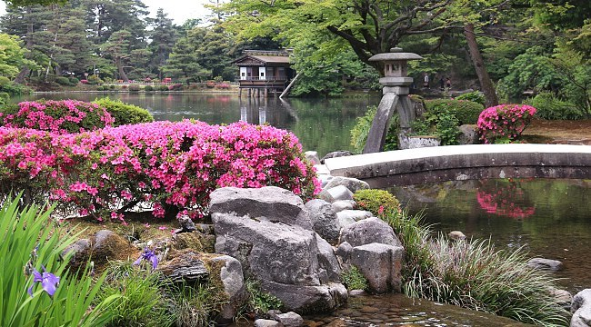

Ruta por el santuario Fushimi Inari (Kyoto, Japón)
Tipo de ruta: Arquitectura y monumentos.
Transporte: A pie.
Fecha de inicio de la ruta: 26-01-2019
Hora de inicio de la ruta: 09:00
Duración: 3 o 4 horas.
Agencia: Sin agencia.
Descripción: El santuario sintoísta de Fushimi Inari, situado al sur de la ciudad de Kioto, es uno de los santuarios más conocidos e importantes de todo Japón, así como uno de los más antiguos, ya que existe desde el siglo VIII. El santuario Fushimi Inari de Kioto es el principal santuario de los dedicados a la deidad Inari, de los alrededor de 32000 que existen en Japón dedicados a este Dios.
Personas adecuadas: Todas las edades.
Lugar de inicio de la ruta: Fushimi-ku, Kyoto.
Dirección de inicio de la ruta: Estación de tren de JR Inari.
Coordenadas:
- Longitud: 34.96676689
- Latitud: 135.77084584
- Altitud: 36
Referencias:
Recomendación: 9
Puerta Romon.
Descripción: La puerta Romon es la puerta principal de acceso al santuario Fushimi Inari que vemos justo después de pasar el segundo gran torii bermellón.
Coordenadas:
- Longitud: 34.967107
- Latitud: 135.772310
- Altitud: 74
Distancia respecto al hito anterior: 160
Fotografías:
Vídeos:
Salón principal Honden.
Descripción: En el salón principal están consagradas las cinco deidades del monte Inari. El edificio tiene decoraciones en los pasillos típicas del período Azuchi-Momoyama (finales del siglo XVI) y muros de 10,6 metros de alto. Las decoraciones son coloridas y dinámicas.
Coordenadas:
- Longitud: 34.967138
- Latitud: 135.772672
- Altitud: 72
Distancia respecto al hito anterior: 35
Fotografías:
Vídeos:
Las mil puertas (Senbon Torii).
Descripción: Después de ver los edificios cercanos al salón principal, llegaremos a las mil puertas torii de color bermellón o Senbon Torii, imagen icónica del santuario Fushimi Inari. Desde el período de Edo (1603-1868), los fieles donan las puertas torii para solicitar y agradecer los favores de la deidad del santuario, creando así el famoso camino Senbon Torii o camino de las mil puertas, que cubren todo el camino desde el santuario interior hasta la cima del monte Inari.
Coordenadas:
- Longitud: 34.966967
- Latitud: 135.774822
- Altitud: 74
Distancia respecto al hito anterior: 750
Fotografías:
Vídeos:
Okusha Hohaisho.
Descripción: Al final del camino de las mil puertas torii o Senbon Torii nos encontraremos con el Okusha Hohaisho, más conocido como Okuno-in, el salón de plegarias del santuario interior. Construido en 1499, aquí es donde se reza a las deidades de la montaña Inari y de hecho el santuario está alineado para poder ver los tres picos del monte desde aquí.
Coordenadas:
- Longitud: 34.966528
- Latitud: 135.775551
- Altitud: 61
Distancia respecto al hito anterior: 23
Fotografías:
Vídeos:
Intersección Yotsu-tusji.
Descripción: La intersección Yotsu-tusji tiene unas vistas preciosas del santuario Fushimi Inari. Desde aquí podemos acercarnos hasta el mirador Kojin-mine, situado detrás del santuario Tanakasha y uno de los mejores lugares en los que disfrutar las vistas de Kyoto y el monte Inari.
Coordenadas:
- Longitud: 34.580170
- Latitud: 135.462162
- Altitud: 49
Distancia respecto al hito anterior: 60
Fotografías:
Vídeos:
Ruta por Akihabara (Tokyo, Japón)
Tipo de ruta: Distrito de ciudad.
Transporte: A pie.
Fecha de inicio de la ruta: 06-02-2019
Hora de inicio de la ruta: 10:00
Duración: Todo el día.
Agencia: Sin agencia.
Descripción: Situado en el corazón de Tokio, el distrito de Akihabara es uno de los lugares turísticos más populares de la capital. En el pasado, Akihabara floreció como el principal distrito dedicado a la electrónica en Japón. En estos días, mientras que el número de tiendas especializadas ha disminuido, hay muchas grandes tiendas donde se puede comprar productos electrónicos a un precio razonable. El otro gran atractivo de Akihabara es su condición de de meca de la cultura otaku. Aquí podrás encontrar un sinfín de tiendas que venden mercancías y juguetes de anime. También podrás disfrutar de los maid cafes. Todo esto hace de Akihabara el lugar perfecto para comprar souvenirs otaku.
Personas adecuadas: Todas las edades.
Lugar de inicio de la ruta: Chiyoda, Tokyo.
Dirección de inicio de la ruta: Estación de Tokio.
Coordenadas:
- Longitud: 35.681185
- Latitud: 139.767041
- Altitud: 14
Referencias:
Recomendación: 9
Estación Akihabara.
Descripción: En las inmediaciones de la entrada de la estación de JR Akihabara, al Barrio Electrónico, hay filas de tiendas que venden partes de computadoras y equipos de radio. Junto a los cafés, el área circundante es también hogar del teatro AKB, donde puedes ver presentaciones del grupo idol AKB48.
Coordenadas:
- Longitud: 35.698370
- Latitud: 139.773116
- Altitud: 17
Distancia respecto al hito anterior: 2600
Fotografías:

Vídeos:
Tienda de ordenadores LABI.
Descripción: La tienda de ordenadores LABI cuenta con una de las mejores selecciones de productos del distrito. Desde el sótano hasta el quinto piso, los estantes están revestidos con populares electrónicos como artículos para ordenadores y cámaras digitales. La tienda LABI en Akihabara está a un minuto de la entrada de la línea JR Akihabara al Barrio Electrónico. Con una sección libre de impuestos y otros servicios, LABI ha desarrollado una excelente atención al cliente para los visitantes de Japón.
Coordenadas:
- Longitud: 35.698041
- Latitud: 139.772249
- Altitud: 42
Distancia respecto al hito anterior: 180
Fotografías:
Vídeos:
La tienda de Gamers en Akihabara.
Descripción: La tienda de Gamers de Akihabara se especializa en mercancías de anime bishojo y actores de voz. Las estanterías están repletas de revistas, CDs, accesorios y más. Asimismo, puedes encontrar pequeños artículos como galletas y tazas, que son del tamaño perfecto para llevar a casa como souvenirs.
Coordenadas:
- Longitud: 35.698346
- Latitud: 139.771694
- Altitud: 40
Distancia respecto al hito anterior: 74
Fotografías:
Vídeos:
Zona de Culturas de Akiba.
Descripción: La Zona de Culturas de Akiba es un edificio multi-propósito en donde se han agrupado múltiples tiendas orientadas a la cultura otaku. Lugares impregnados con el espíritu de Akihabara, como la tienda cosplay ACOS y los distribuidores de mercancías de anime Rashinban y Animate, se alinean en los corredores. El Teatro Akiba Culture está situado en el primer piso, donde se pueden ver actuaciones en vivo de los idols en ciernes.
Coordenadas:
- Longitud: 35.699562
- Latitud: 139.770478
- Altitud: 40
Distancia respecto al hito anterior: 350
Fotografías:
Vídeos:
@Home Cafe.
Descripción: @Home Cafe es un maid café extremadamente popular en Akihabara. Muchos turistas acuden a este café que existe desde 2005. El café abarca del cuarto al séptimo piso del edificio y al parecer hay 180 maids en el personal. Los menús están disponibles en inglés, asi que pide algo de comida y una bebida.
Coordenadas:
- Longitud: 35.699604
- Latitud: 139.770739
- Altitud: 27
Distancia respecto al hito anterior: 18
Fotografías:
Vídeos:
Ruta por Nara (Nara, Japón)
Tipo de ruta: Arquitectura y monumentos.
Transporte: A pie.
Fecha de inicio de la ruta: 12-03-2019
Hora de inicio de la ruta: 10:00
Duración: Todo el día.
Agencia: Sin agencia.
Descripción: Nara es la capital de la prefectura de Nara en la región de Kansai, una de las más tradicionales de Japón. Fue capital del país en el Japón medieval. Nara es uno de los destinos turísticos más importantes de Japón debido a la gran cantidad de templos antiguos y por la buena conservación. También es conocido el parque de Nara por sus ciervos sika, los cuales campan libremente por todo el área verde de Nara.
Personas adecuadas: Todas las edades.
Lugar de inicio de la ruta: Nara, Nara.
Dirección de inicio de la ruta: Kintetsu-Nara Station.
Coordenadas:
- Longitud: 34.684296
- Latitud: 135.827523
- Altitud: 83
Referencias:
Recomendación: 8
Templo Todaiji.
Descripción: Todaiji es uno de los templos más famosos y significantes históricamente, y una seña de identidad de Nara. El templo fue construido en 752 como el templo insignia de todos los templos Budistas japoneses, y alcanzó tal importancia que la capital se movió de Nara a Nagaoka para disminuir la influencia del templo en los asuntos del gobierno.
Coordenadas:
- Longitud: 34.688980
- Latitud: 135.839816
- Altitud: 148
Distancia respecto al hito anterior: 1600
Fotografías:

Vídeos:
Parque Nara.
Descripción: El Parque Nara es un gran parque del centro de Nara. Establecido en 1980, es la localización de muchas de las atracciones principales de Nara, como el Todaiji, Kasuga Taisha, Kofukuji y el Museo Nacional de Nara.
Coordenadas:
- Longitud: 34.685057
- Latitud: 135.843014
- Altitud: 114
Distancia respecto al hito anterior: 850
Fotografías:
Vídeos:
Kasuga Taisha.
Descripción: Kasuga Taisha es el santuario más famoso de Nara. Se estableció al mismo tiempo que la capital y está dedicado a la deidad responsable de la protección de la ciudad.
Coordenadas:
- Longitud: 34.681380
- Latitud: 135.848387
- Altitud: 151
Distancia respecto al hito anterior: 1100
Fotografías:
Vídeos:
Ruta por Kanazawa (Kanazawa, Japón)
Tipo de ruta: Arquitectura y monumentos.
Transporte: A pie.
Fecha de inicio de la ruta: 05-03-2019
Hora de inicio de la ruta: 09:00
Duración: Todo el día.
Agencia: Sin agencia.
Descripción: Durante el Período Edo, Kanazawa fue el asentamiento del Clan Maeda, el segundo clan feudal más poderoso después del Tokugawa en términos de producción de arroz y tamaño de su feudo. En consecuencia, Kanazawa creció hasta convertirse en una ciudad de grandes logros culturales, rivalizando con Kyoto y Edo (Tokyo).
Personas adecuadas: Todas las edades.
Lugar de inicio de la ruta: Kanazawa, Ishikawa.
Dirección de inicio de la ruta: Kanazawa Station.
Coordenadas:
- Longitud: 36.578245
- Latitud: 136.648034
- Altitud: 21
Referencias:
- Entrada de la Wikipedia.
- Entrada de Kanazawa en "japan-guide".
- Entrada de Kenrokuen Garden en "japan-guide".
Recomendación: 9
Jardín Kenrokuen.
Descripción: Kenrokuen está clasificado como uno de los "tres jardines más hermosos" de Japón, junto al Kairakuen de Mito y el Korakuen de Okayama. Los espaciosos terrenos solían ser el jardín exterior del Castillo Kanazawa y fueron construidos por la gobernante familia Maeda durante un período de casi dos siglos. Abierto al público en 1871, Kenrokuen se caracteriza por una variedad de árboles en flor que dejan al jardín con un aspecto diferente en cada estación del año.
Coordenadas:
- Longitud: 36.562126
- Latitud: 136.662654
- Altitud: 53
Distancia respecto al hito anterior: 2600
Fotografías:
- 
Vídeos:
21st Century Museum of Contemporary Art.
Descripción: El Museo del Siglo 21 de Arte Contemporáneo abrió en 2004 en el centro de Kanazawa, solo a unos pasos del Kenrouken. Exhibe obras de reconocidos artistas contemporáneos de Japón y de todo el mundo, y es uno de los museos de arte más famosos de Japón.
Coordenadas:
- Longitud: 36.560892
- Latitud: 136.658176
- Altitud: 25
Distancia respecto al hito anterior: 450
Fotografías:
Vídeos:
Distrito Higashi Chaya.
Descripción: Una chaya es un tipo exclusivo de restaurante donde los invitados son entretenidos por geishas, que tocan canciones y bailan. Durante el Período Edo, las chaya se encontraban en distritos de entretenimiento designados, normalmente cerca del límite de la ciudad. Kanazawa tiene tres distritos chaya bien preservados, Higashi Chayagai, Nishi Chayagai y Kazuemachi.
Coordenadas:
- Longitud: 36.572626
- Latitud: 136.666506
- Altitud: 20
Distancia respecto al hito anterior: 2300
Fotografías:
Vídeos:
Ruta por Minakami (Minakami, Japón)
Tipo de ruta: Actividades de exterior.
Transporte: En coche.
Fecha de inicio de la ruta: 15-02-2019
Hora de inicio de la ruta: 09:00
Duración: Dos días.
Agencia: Sin agencia.
Descripción: Minakami es un montañoso resort de baños termales, fácilmente accesible desde Tokyo en la Prefectura Gunma. A la sombra del cercano Monte Tanigawa, Minakami, junto a Kusatsu, Ikaho y Shima, forman los cuatro mejores destinos de ciudades de baños termales en Gunma.
Personas adecuadas: Adultos.
Lugar de inicio de la ruta: Minakami, Gunma.
Dirección de inicio de la ruta: Minakami Station.
Coordenadas:
- Longitud: 36.778640
- Latitud: 138.968838
- Altitud: 496
Referencias:
- Entrada de la Wikipedia.
- Entrada de Minakami en "japan-guide".
- Entrada de las actividades exteriores de Minakami en "japan-guide".
Recomendación: 7
Rafting en el río Tone.
Descripción: Múltiples compañías ofrecen tours de rafting por el río Tone. Los 12 km de río tienen varias secciones dependiendo de tu habilidad, desde un novato a un veterano de este deporte.
Coordenadas:
- Longitud: 36.782515
- Latitud: 138.976771
- Altitud: 16
Distancia respecto al hito anterior: 1100
Fotografías:
Vídeos:
Takaragawa Onsen.
Descripción: Osenkaku, el único ryokan (posada) de Takaragawa Onsen, tiene los más famosos baños exteriores del país. Los baños de género mixto están al lado de un río y muestran un distinto paisaje cada estación del año. También tiene un baño exterior solo para mujeres.
Coordenadas:
- Longitud: 36.847982
- Latitud: 139.047026
- Altitud: 687
Distancia respecto al hito anterior: 12900
Fotografías:
Vídeos:
Takumi no Sato.
Descripción: Takumi no Stao es una aldea de arte y artesanía situada junto a campos de arroz y huertos de manzanas, y a la sombra de las montañas de Minakami. Esparcidos por esta pequeña aldea hay más de dos docenas de talleres y tiendas donde se puede comprar varios productos artesanales japoneses. Además, se pueden experimentar de primera mano, ya sea viendo su fabricación o participando en un taller para que puedas hacerlos tu mismo.
Coordenadas:
- Longitud: 36.696057
- Latitud: 138.908294
- Altitud: 547
Distancia respecto al hito anterior: 34500
Fotografías:
Vídeos: